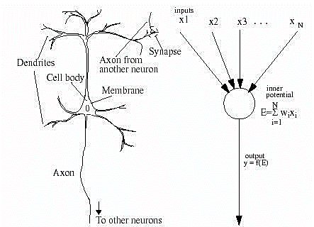
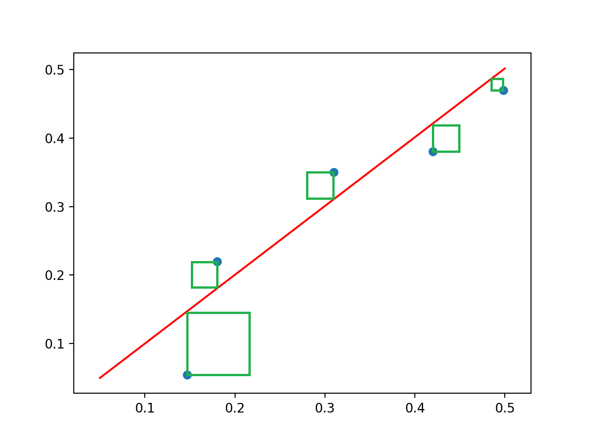

Humanity has been dreaming of creating intelligent inventions since as far back as 800 BC, when ancient Greeks wrote about mechanical men created by the Gods. In the last century, technology has been progressing exponentially and has brought us to a point where that dream of self-aware robots is no longer associated with magic. The creation of Artificial Intelligence has allowed us to create amazing programs that can far surpass the abilities of any human.
The key advancement in the field of artificial intelligence that allowed us to do amazing things like creating chat-bots and detect malignant tumors was the discovery of neural networks. Before this, programmers created relatively simple regression models to predict and classify data. However, these models had their limitations.
What are Neural Networks
A neural network is exactly what it says in the name. It is a network of neurons that are used to process information. To create these, scientists looked at the most advanced data processing machine at the time — the brain. Our brains process information using networks of neurons. They receive an input, process it, and accordingly output electric signals to the neurons it is connected to. Using bio-mimicry, we were able to apply the architecture of our brains to further the field of artificial intelligence.

Artificial neural networks recreate the structure of human neurons to process information resulting in much more accurate results than previously used regression models.
The Parts of a Neural Network

A neural network is made up of 3 main parts:
Input Layer
This is literally the layer that inputs information for the neural network to process. Each circle represents 1 feature (a piece of information). This can be anything. It could be the square footage of your house for a house price prediction program, or the value of a pixel on a screen for a computer vision program
Hidden Layers
These layers do all the processing for neural networks. You can have as many of these as you want. Generally speaking, the more hidden layers you have, the more accurate the neural network will be. Each layer consists of nodes that mimic our brains’ neurons. These nodes receive information from the previous layer’s nodes, multiply it by weight and then add a bias to it. Each line in the diagram represents a weight. That may sound confusing so here’s an analogy:
Let’s say I want to predict my SAT score and I have gathered two pieces of data: the number of hours I prepared, and the breakfast I had on the day of the test. These would go into the input layer. It’s quite obvious that the hours I spend preparing will have a much greater impact on my mark than my breakfast (or everyone would ace the SAT). Because of this, the hours I spend studying receive a significantly larger weight value to be multiplied by. Now, granted, there’s a chance that your breakfast may vary slightly impact your score, so it will receive a much lower weight value.
Output Layer
This layer simply brings together the information from the last hidden layer of the network to output all the information you need from the program.
· · ·
To sum up, neural networks take information from the input layer, process it in the hidden layers, and output the desired information in the output layer. This whole process of running a neural network is called forward propagation.
Training Neural Networks
After understanding the structure of neural networks, you may be wondering how a neural network knows what biases and weights to use. Neural networks often start off with random weights and biases, but then train themselves over and over again till they reach peak performance. They do this by calculating the amount of error they currently have. This is called the cost of the neural network. This is calculated by finding the difference between the network’s prediction, and the desired result and finding the sum of those error values’ squares (target - output)².

The squares of the difference between the prediction and actual value
In the graph, the red line represents the predictions of a simple neural network. The blue dots are the correct predictions. The neural network calculates how far the predictions (red line) are from the actual values (blue dots) and squares it (creates the green squares). It then adds up those squared values to give you the cost of the neural network.
Optimizing the Weights and Biases
The entire goal of training the neural network is to minimize the cost. Neural networks do this using a process called backpropagation. This seems like a complicated word but its quite simple. As I previously mentioned, forward propagation is when you run information through a neural network to give you a result. Backward propagation is literally the same thing but backward. You just start at the output layer and run the neural network in reverse to optimize the weights and biases. The math is quite complicated and beyond the scope of this article, but you can always go search the internet if you’re interested in learning it!
· · ·
While this article only covered the basic theory of neural networks, there’s a lot of advanced calculus and matrix operations that go into actually performing all these complicated processes. There’s still so much more to learn — from types of neural networks (like RNNs, CNNs, and GANs) to other important training calculations like gradient descent.
The 21st century revolves around the use of data and artificial intelligence is the most powerful data processing tool ever created. Because of this, artificial intelligence will disrupt every industry. It doesn’t matter if you’re a teacher, a chef, a lawyer, or a doctor. Artificial Intelligence 100% has the ability to disrupt your industry. Don’t believe me? AI can create customized lesson plans for students, design creative new recipes, draft up legal documents, and create highly accurate diagnoses of various medical illnesses. For better or for worse, AI is coming to change the world.